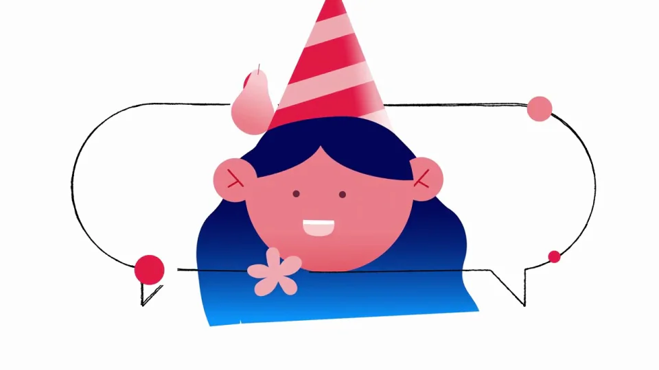
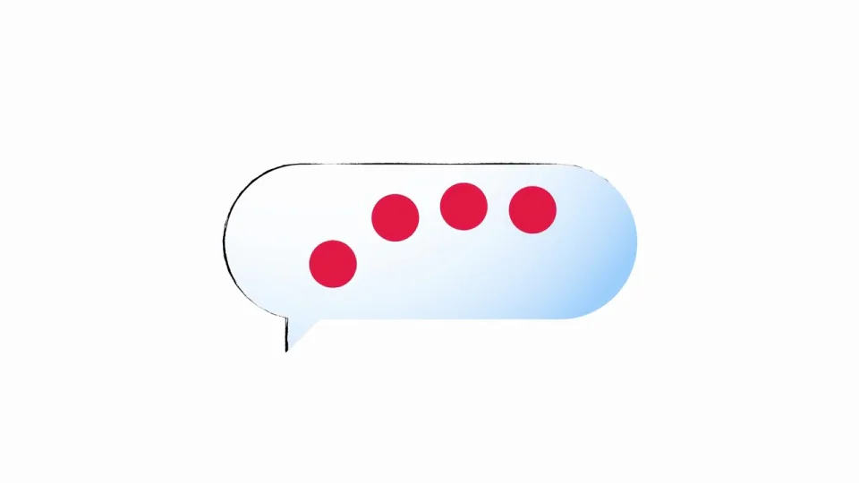
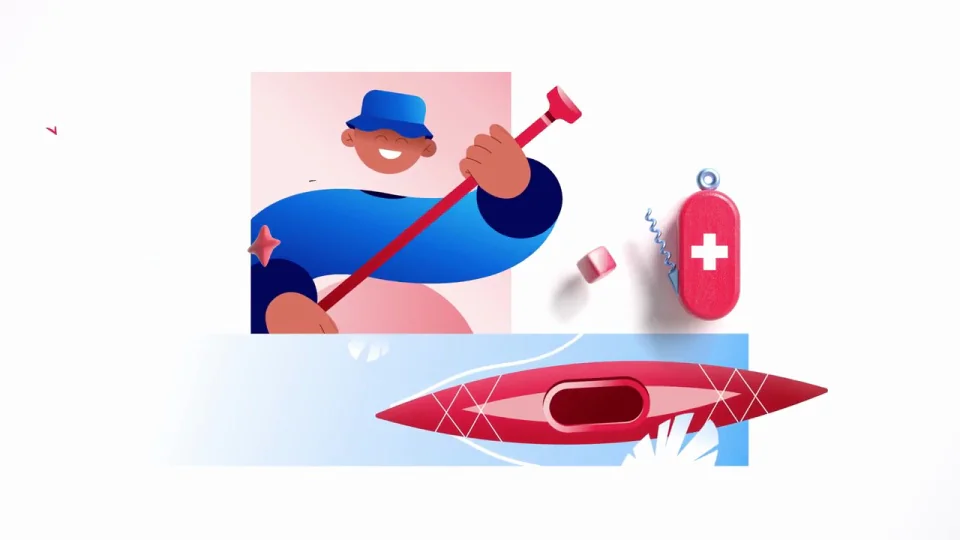
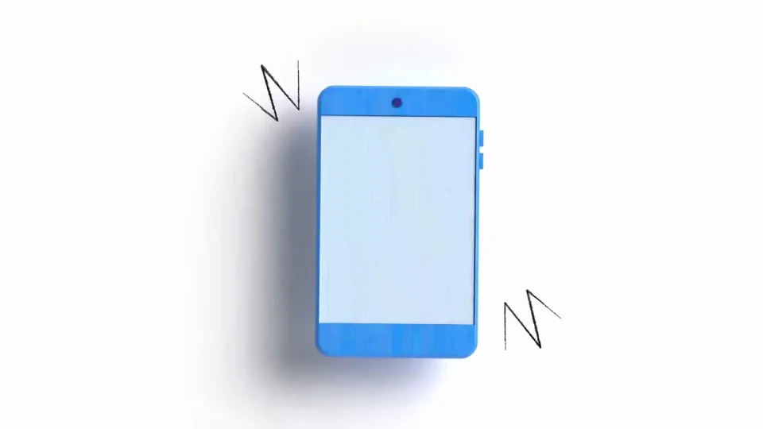
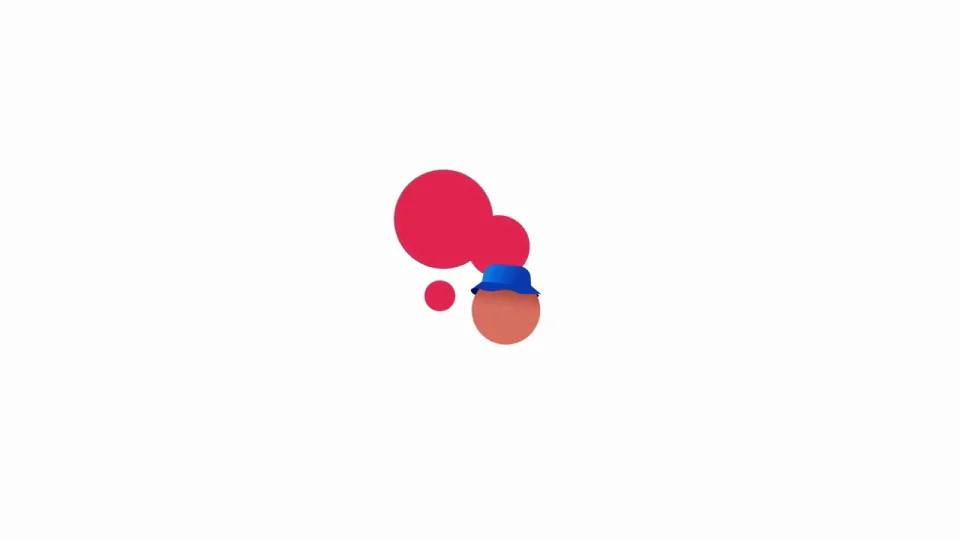

Twilio / V395
Twilio｜客户互动平台 MG 介绍
让品牌圆点进入人物和生活场景，通过相同的连线、红色物件与位置接力串起多个客户故事。
构图与编排 可播放 · 可替换内容
整体编排规则示例
查看 HTML 源码
<!doctype html><html lang="zh-CN"><meta charset="utf-8"><meta name="viewport" content="width=device-width,initial-scale=1"><title>Twilio｜客户互动平台 MG 介绍 · sequence</title><style>html,body{margin:0;width:100%;height:100%;overflow:hidden;background:#fcfcfc}canvas{display:block;width:100%;height:100%;object-fit:contain}</style><body data-mode="sequence"><canvas width="1000" height="600"></canvas><script src="data.js"></script><script src="common.js"></script><script src="scene.js"></script><script src="bridge.js"></script></body></html>画面元素四个品牌圆点弧线连接通信气泡人物生活物件设备与消息
MOTION LANGUAGE
动作与构图
局部动作 · 构图规则
01
用同一组形状贯穿品牌与情境
用同一组形状贯穿品牌与情境规则示例
查看 HTML 源码
<!doctype html><html lang="zh-CN"><meta charset="utf-8"><meta name="viewport" content="width=device-width,initial-scale=1"><title>Twilio｜客户互动平台 MG 介绍 · sequence</title><style>html,body{margin:0;width:100%;height:100%;overflow:hidden;background:#fcfcfc}canvas{display:block;width:100%;height:100%;object-fit:contain}</style><body data-mode="clip" data-start="0" data-end="12"><canvas width="1000" height="600"></canvas><script src="data.js"></script><script src="common.js"></script><script src="scene.js"></script><script src="bridge.js"></script></body></html>四个圆点、细弧线、气泡和圆角块构成基础词汇。它们既是片头标识，也能变成消息、服务与数据连接。
白底留出运动空间；红粉物件保持高对比，人物以蓝色主体和暖色面部区分。
02
以人物为中心组织一个交互

先建立人物，再让相关手机、购物或服务物件进入。物件围绕人物形成关系，下一镜从其中一个物件继续。
03
镜头通过共享对象交接
镜头通过共享对象交接规则示例
查看 HTML 源码
<!doctype html><html lang="zh-CN"><meta charset="utf-8"><meta name="viewport" content="width=device-width,initial-scale=1"><title>Twilio｜客户互动平台 MG 介绍 · sequence</title><style>html,body{margin:0;width:100%;height:100%;overflow:hidden;background:#fcfcfc}canvas{display:block;width:100%;height:100%;object-fit:contain}</style><body data-mode="clip" data-start="25" data-end="35"><canvas width="1000" height="600"></canvas><script src="data.js"></script><script src="common.js"></script><script src="scene.js"></script><script src="bridge.js"></script></body></html>可以沿弧线运动、拉近物件或绕人物转场；每次交接至少保留一个形状或位置关系，让多个行业仍属于同一个系统。
04
用重复结构容纳多个行业
每轮只替换人物与关键物件，保持相同的进入、交互和退出逻辑。末段逐步撤掉道具，把关注点交还给品牌。
SEQUENCE
段落与节奏
点击段落，定位到上方编排示意。





画面参考 · 离散静帧
KEEP THE RELATIONSHIPS
制作其他主题
- 替换行业物件和人物角色，保留信号→人物情境→交互→更多情境→品牌的组织关系。
- 每个小场景保持一位主体、一个交互目标和少量连接元素；不要把所有道具同时堆上屏。
制作约束
四个品牌圆点 / 弧线连接 / 通信气泡 / 人物 / 生活物件 / 设备与消息
- 红色圆点先形成品牌，再变成连接人物和物件的信号；同一套几何词汇贯穿整段。
- 每段以人物为中心，手机、消息或物件围绕其展开；用位置接力把下一场景引入。
- 平面人物和立体信号物件共存，红粉承担连接与强调，蓝色承担人物轮廓。